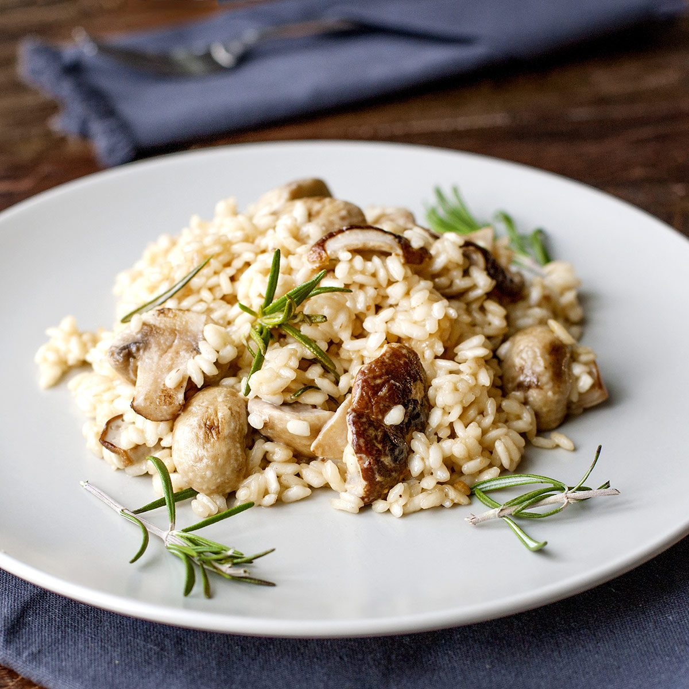

| Entradas | Descrição | Preço | *Imagem ilustrativa |
|---|---|---|---|
| Bruschetta al Pomodoro | Pão italiano crocante com tomates frescos, manjericão e azeite extravirgem. | R$ 27 | |
| Carpaccio di Manzo | Finas fatias de carne bovina crua, temperadas com azeite, limão, rúcula e parmesão. | R$ 33 | |
| Arancini di Riso | Bolinhos de risoto empanados e fritos, recheados com queijo e molho de tomate. | R$ 25 |
| Prato Principal | Descrição | Preço | *Imagem ilustrativa |
|---|---|---|---|
| Spaghetti alla Carbonara | Massa com molho de ovos, queijo pecorino e pancetta | R$ 59 |  |
| Tagliatelle al Ragù di Cinghiale | Massa fresca com ragu de javali ao vinho tinto, típico da Toscana. | R$ 85 | |
| Gnocchi al Pesto Genovese | Nhoques de batata ao molho de manjericão, pinoli e parmesão. | R$ 79 | |
| Risotto ai Funghi | Risoto cremoso preparado com cogumelos e finalizado com parmesão. | R$ 67 |  |
| Lasagna alla Bolognese | Camadas de massa, ragu de carne, molho bechamel e parmesão gratinado. | R$ 65 |
| Sobremesas | Descrição | Preço | *Imagem ilustrativa |
|---|---|---|---|
| Tiramisù Classico | Camadas de biscoito champagne com café, creme de mascarpone e cacau. | R$ 42 | |
| Panna Cotta alla Vaniglia | Creme cozido delicado de baunilha, servido com calda de frutas vermelhas. | R$ 32 |  |
| Cannoli Siciliani | Massa crocante recheada com creme de ricota, frutas cristalizadas e chocolate. | R$ 37 |  |
| Bebidas | Preço |
|---|---|
| Vinhos | * Consulte os preços com o garçom |
| Chianti Classico (Toscana) | |
| Barolo DOCG (Piemonte) | |
| Prosecco di Valdobbiadene (Vêneto) | |
| Refrigerante ou água | R$ 9 |
| Suco | R$ 12 |